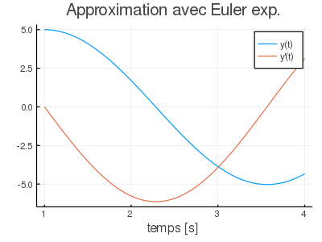

Résolution d'équations différentielles ordinaires
Cette section est dédiée à la résolution numérique d'équations ordinaires de forme:
$\frac{dY}{dt}(t) = F(t,Y(t)) \quad \text{avec} \quad Y(t_0) = Y_0$.
Les algorithmes disponibles sont:
Exemple de résolution d'un système d'équations différentielles ordinaires
Soit l'équation différentielle ordinaire d'ordre 2 décrivant un système masse-ressort de masse $m=2\,\text{kg}$ et de constante de rappel $k=3\,\text{N/m}$:
$\frac{d^2 y}{dt^2}(t) = -\frac{k}{m} y(t) \quad \text{avec} \quad y(1) = 5 \text{ et } \frac{d y}{dt}(1) =0$.
On s'intéresse à la solution entre $t_0=1\,\text{s}$ et $t_f = 4\,\text{s}$. On doit tout d'abord effectuer un changement de variables:
$z_1(t) = y(t)\\ z_2(t) = \frac{d y}{dt}(t)$
afin de transformer l'EDO d'ordre 2 en ce système d'EDOs d'ordre 1:
$\frac{d z_1}{dt}(t) = z_2(t)\\ \frac{d z_2}{dt}(t) = -\frac{k}{m}z_1(t)$
On peut appliquer la méthode d'Euler explicite afin de résoudre ce système d'EDOs. Il faut donc créer la fonction $F:\mathbb{R} \times \mathbb{R}^2 \to \mathbb{R}^2$:
function my_edo(t,z)
m = 2.
k = 3.
f = zeros(length(z))
f[1] = z[2]
f[2] = -k/m*z[1]
return f
endIl faut ensuite appeler la fonction euler:
using MTH2210
using Plots
t0 = 1.
tf = 4.
tspan = [t0,tf]
z0 = [5.,0.]
nbpas = 1000
(temps, z) = euler(my_edo, tspan , z0 , nbpas)Les résultats peuvent ensuite être affichés dans un graphique.
plot(temps,z[:,1],label="y(t)")
plot!(temps,z[:,2],label="y'(t)",xlabel="temps [s]",title="Approximation avec Euler exp.")